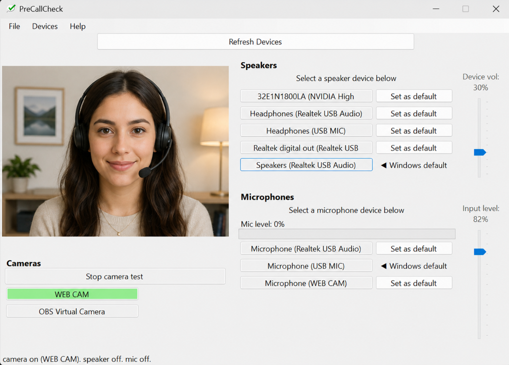

PreCallCheck
Check your camera, microphone, and speakers before joining a call.
PreCallCheck is a small Windows utility that helps you confirm your call devices are working before you join a meeting.

PreCallCheck gives you a quick local view of your camera, selected microphone, selected speakers, and Windows default devices.
What it does
Preview your webcam before joining a call.
See the selected input device and current input level.
Review output devices and Windows default audio settings.
Privacy
PreCallCheck uses your local Windows camera, microphone, and speaker devices for testing. It does not upload or record audio or video.
Contact
Feedback, bug reports, and early user comments are welcome: info@rai-software.com